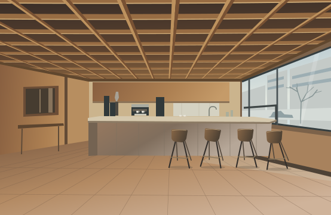

현재 빈자리 확인
카메라 영상에서 테이블별 사용 여부를 확인하는 단계예요.
지금 카페에 자리가 있는지 확인하고,
내가 도착할 때 얼마나 붐빌지 미리 알아보세요.

도착 시간은 혼잡도를 예측할 시점을, 방문 인원은 함께 앉을 자리를 확인하는 데 사용해요.
현재 매장 관측과 도착 시점 예측, 두 정보를 차례로 살펴봅니다.
카메라 영상에서 테이블별 사용 여부를 확인하는 단계예요.
선택한 시간 뒤의 혼잡도를 예측 대상으로 삼아요.
테이블별 빈자리와 수용 인원으로 별도 안내해요.
실서비스에서는 촬영을 허가받은 고정 카메라 영상에서 YOLO로 사람의 위치를 찾을 계획이에요. 영상 속 테이블 영역은 미리 표시해 두고, 사람이 어느 영역에 있는지 확인해 사용 중인지 추정합니다. 최근 30초 동안 감지된 빈도도 반영해 옆을 잠깐 지나간 사람 때문에 상태가 바뀌는 일을 줄여요. 가림이나 카메라 각도로 상태를 판단하기 어려운 테이블은 ‘확인 어려움’으로 표시하고 확인된 빈자리 수에 넣지 않습니다.
오후 2시 50분에는 전체 10테이블 중 5개가 비어 있었어요. 이후 10분 동안 테이블 1개가 새로 비었고, 빈 테이블 4개에 새 손님이 앉았어요. 그래서 오후 3시에는 빈 테이블이 2개 남았습니다.
매장 정보에는 현재 빈 테이블 수와 전체 테이블 수, 최근 10분간 새로 빈 테이블 수와 새로 찬 테이블 수를 담아요. 지금 빈 테이블이 똑같이 2개여도 5개에서 2개로 줄었는지, 0개에서 2개로 늘었는지에 따라 흐름은 달라요. 테이블별 빈 상태와 사용 중 상태가 바뀐 시각도 기록합니다. 대기 일행 수, 테이블 사용 시간, 요일·시간대·날씨는 자료를 확보해 예측에 도움이 되는지 확인한 뒤 추가할 후보예요.
카메라가 판단한 상태는 사람이 같은 영상을 확인한 결과와 비교할 예정이에요. 특히 사용 중인 테이블을 빈자리로 잘못 표시한 경우를 따로 살펴봅니다.
학습 자료 한 건은 ‘그 시각에 알 수 있었던 상황’과 ‘15분 뒤 실제로 확인한 결과’를 짝지은 기록이에요. 금요일 오후 2시 50분에 빈 테이블 5개에서 출발해, 10분 동안 1개가 비고 4개가 차 오후 3시에 2개가 남았다고 해볼게요. 이때 비가 왔다는 정보도 기록할 수 있어요. 오후 3시 15분에 모두 찼다면 학습 정답은 ‘만석’입니다.
이렇게 여러 날의 기록을 모아요. 모델에 넣는 정보는 예측 요청 시점에 알 수 있던 내용뿐이고, 15분 뒤 혼잡도는 실제 시각이 지난 후 확인해 정답으로 붙입니다. 요일·시간대·강수·주변 행사도 당시 정보로 모을 수 있지만, 처음 보는 날짜에도 예측에 도움이 되는지 비교한 뒤 사용 여부를 정할 예정이에요.
지금 카페 상황을 숫자로 정리해서 이미 학습해 둔 트리들에 넣어요.
LightGBM은 과거 카페 기록으로 예측 규칙을 학습하고, 사용자가 도착할 시점의 혼잡도 단계를 판단하는 모델이에요. 학습할 때는 과거 상황과 실제 결과를 함께 보고 질문과 갈래를 정합니다. 실제 예측에서는 오늘 확인한 정보만 이미 학습된 트리에 넣어요.
예를 들어 빈 테이블이 2개면 ‘2개 이하인가?’에 ‘예’로 답합니다. 최근 10분 동안 새로 빈 테이블 1개, 새로 찬 테이블 4개라면 다음 질문에서도 자리가 줄었는지 확인해 갈래를 고릅니다. 트리마다 질문이 다르고 마지막 칸에서 혼잡도 단계별 점수에 값을 보태요. 여러 트리의 점수를 합산해 ‘거의 비어 있음’, ‘빈자리 있음’, ‘거의 만석’, ‘만석’ 중 가장 높은 단계를 선택할 계획입니다.
예측이 끝난 뒤 실제 혼잡도는 예정 시각이 지나야 확인할 수 있어요. 나중에 모델을 갱신할 때 이 실제 결과를 학습 정답으로 활용합니다. 여러 도착 시간을 지원하려면 예측 간격별 과거 결과가 필요합니다. 이번 사이트는 시연 데이터라 실제 모델 점수나 정확도를 계산하지 않습니다.
모델은 과거 날짜의 기록으로 학습하고 학습에 쓰지 않은 이후 날짜의 기록으로 평가할 계획이에요. 같은 매장의 같은 시각을 기준으로 위 세 가지 방법을 비교해, 미래를 예측하는 방식이 현재 상태만 보는 것보다 도움이 되는지 확인합니다.
전체 예측 중 실제 단계와 일치한 비율을 확인하고, 특히 실제는 만석인데 빈자리가 있다고 예측한 횟수를 따로 살펴볼 예정이에요. 사용자가 예보를 믿고 출발했는데 헛걸음하는 일을 줄이기 위해서입니다. 주변 카페 데이터도 확보되면 가까운 대안의 도보 시간과 도착 시점 혼잡도를 함께 보여줄 수 있어요.
참고 연구인 채희주 외(2023) 「실내 사람 위치 추적 기반 LSTM 모델을 이용한 고객 혼잡 예측 연구」는 영상 속 사람 위치와 좌석 영역을 비교해 현재 상태를 파악하고, LSTM·Seq2Seq로 20분 뒤 전체 이용객 수를 예측했어요. 자리예보는 영상으로 자리를 관측하는 방식을 참고해 최근 테이블 변화와 외부 정보를 결합하고, 도착 시점의 혼잡도 단계를 예측하려는 방향입니다.
연구 출처 보기 ↗초록창가 커피 · 매장 혼잡도 예측
🪑 2명이 함께 앉을 수 있는 테이블이 있어요.
혼잡도와 일행 착석 안내는 서로 다른 시연 정보로 계산됩니다.